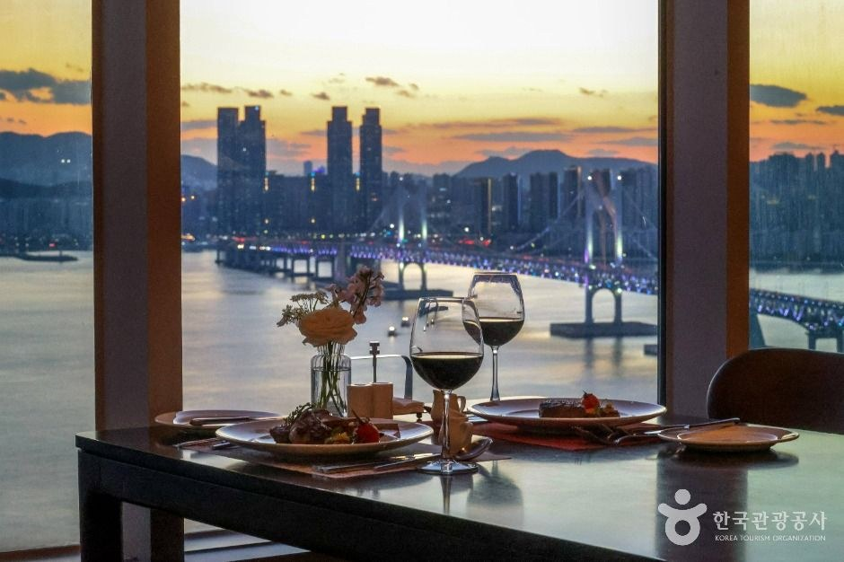
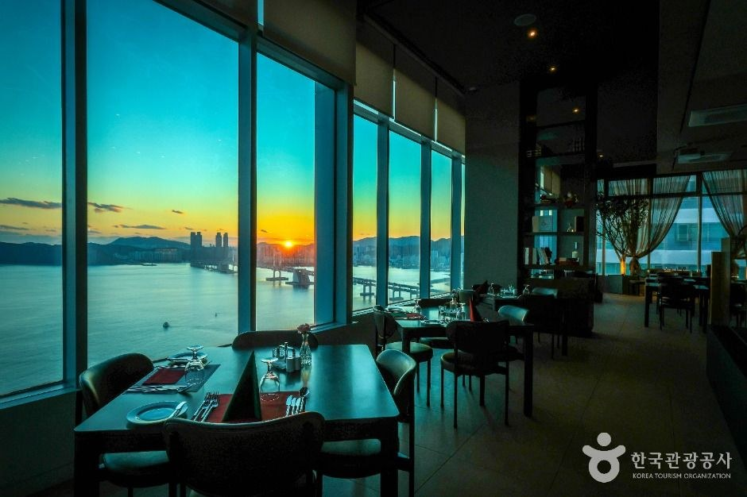
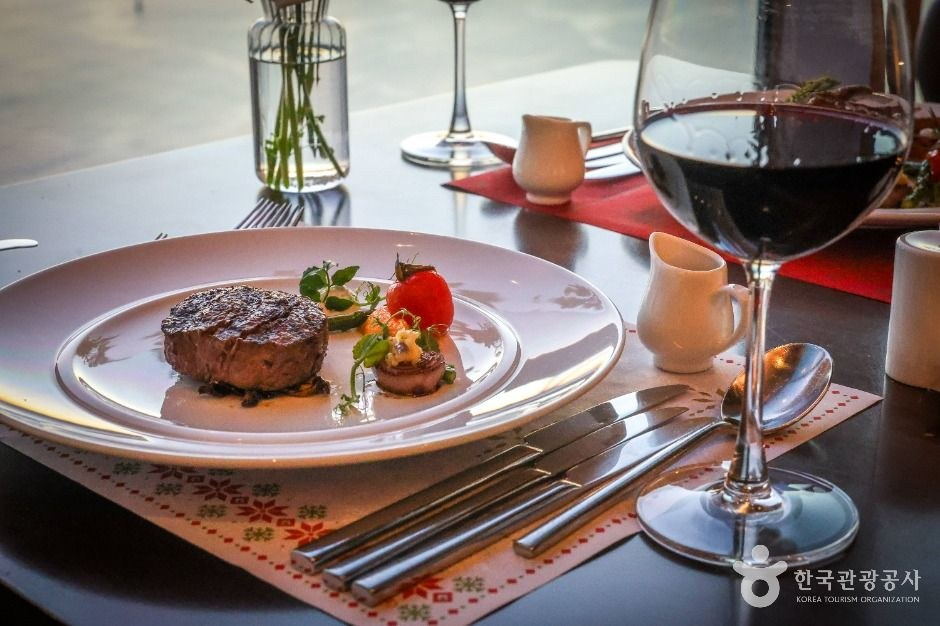
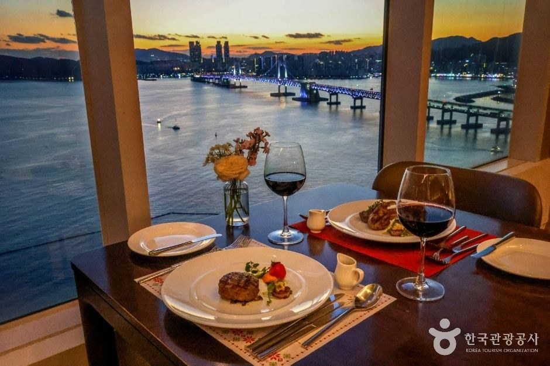

Busan Haeundae Marine City Cloud32 Guide: Overview
This Busan Cloud32 Marine City guide is about one specific kind of Busan evening: sitting down for an Italian course dinner while the sky turns orange over the water. Cloud32 (클라우드32) is an Italian restaurant on Marine City 3-ro in Haeundae-gu, the high-rise waterfront district just west of Haeundae Beach.
It is a good fit for anniversaries, a family meal or a date night where the view matters as much as the food. It is not a quick snack stop, so plan the meal as the main event of your evening.

What to Expect
According to Korea Tourism Organization destination text, the restaurant offers an ocean and city view throughout the meal, with a modern, upscale interior. Tables are spaced widely, so conversation stays private — a point the listing makes for both families and couples.
The photographs show large windows toward Gwangandaegyo (the Diamond Bridge) and the marina skyline at sunset, with tables set for wine and steak. Sunset seating is the draw, so reserve around that time and ask if a window table is possible.


Menu: Courses, Pasta and Steak
Cloud32 serves lunch and dinner courses plus pasta, steak and other Italian dishes made from fresh ingredients. The listing describes the courses as well balanced from starter to dessert and names the Cloud32 Premium Course as the representative menu. We do not list prices because the official text does not give them — ask when you book.


Visitor Information
| Item | Details |
|---|---|
| Name | Cloud32 (클라우드32), Italian restaurant |
| Address | 52 Marine City 3-ro, Haeundae-gu, Busan (부산광역시 해운대구 마린시티3로 52) |
| Hours | 12:00–24:00; break 15:30–17:00 |
| Lunch | 12:00–15:30 (last order 14:00) |
| Dinner | 17:00–21:30 (last order 20:00); overall last order 23:00 |
| Closed | Open every day of the year, per the listing |
| Parking | Available, listed as free |
| Inquiries | 0507-1429-5320 (as listed by KTO) |
| Signature menu | Cloud32 Premium Course |
Sources: Korea Tourism Organization (한국관광공사) destination text. Photos © Korea Tourism Organization. No AI-generated images. Hours and menus can change — confirm before you go.
Getting There
Search 클라우드32 or paste 부산광역시 해운대구 마린시티3로 52 into Naver Map or Kakao Map. Marine City sits west of Haeundae Beach, so it is easy to combine with a Haeundae afternoon. We do not quote a specific subway exit or taxi fare because official materials do not give one — map apps are more reliable than a number printed here. Parking is listed as available at no charge, which is helpful if you are driving.
Tips for Your Visit
- Reserve for sunset. Most of the photographs show the orange-sky hour, which is when the view is at its best.
- Mind the break. The kitchen pauses from 15:30 to 17:00, and last orders are earlier than the closing time.
- Ask about course contents and any dietary needs when booking.
- Pair it with Haeundae Beach or Gwangalli earlier in the day for a full Busan seaside itinerary.
How It Compares with Other Busan Evening Plans
| Cloud32 Marine City | Gwangalli Beach night view | Yeongjuam Temple (Suyeong) | |
|---|---|---|---|
| Style | Sit-down Italian course dinner | Beach walk and drone-show nights | Quiet temple walk |
| Best time | Sunset into dinner | After dark | Daytime |
| Budget | Restaurant course pricing | Mostly free | Mostly free |
Who It Suits
- Great for: Couples and anniversaries who want an ocean-view dinner.
- Great for: Family gatherings who prefer wide table spacing and a quieter room.
- Great for: Travelers wanting a Western-style meal after several days of Korean food.
- Less ideal: Budget travelers or anyone wanting a quick bite on the beach.
Plan Your Busan Trip
Busan Cloud32 FAQ
What is Cloud32?
Cloud32 (클라우드32) is an Italian restaurant in Marine City, Haeundae-gu, Busan. Korea Tourism Organization listing text describes it as an authentic Italian restaurant with ocean and city views.
Where is it?
52 Marine City 3-ro, Haeundae-gu, Busan (부산광역시 해운대구 마린시티3로 52). Search 클라우드32 in Naver Map or Kakao Map.
When is it open?
The KTO text lists 12:00–24:00 with a 15:30–17:00 break. Lunch runs 12:00–15:30 (last order 14:00), dinner 17:00–21:30 (last order 20:00), and the overall last order is 23:00. It is listed as open every day of the year.
Is there parking and how do I contact them?
Parking is listed as available and free. The KTO listing gives 0507-1429-5320 for inquiries. Confirm reservations and course details directly, because menus and hours can change.
What should I order?
The listing names the Cloud32 Premium Course as the signature menu, alongside lunch and dinner courses, pasta and steak. Ask about course contents when you reserve.